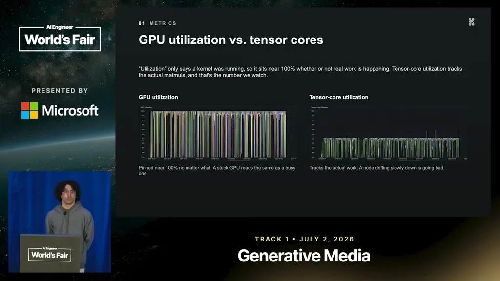
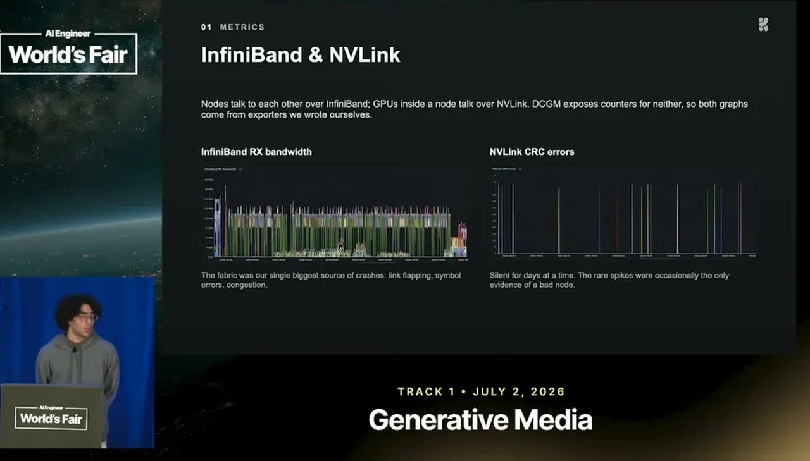
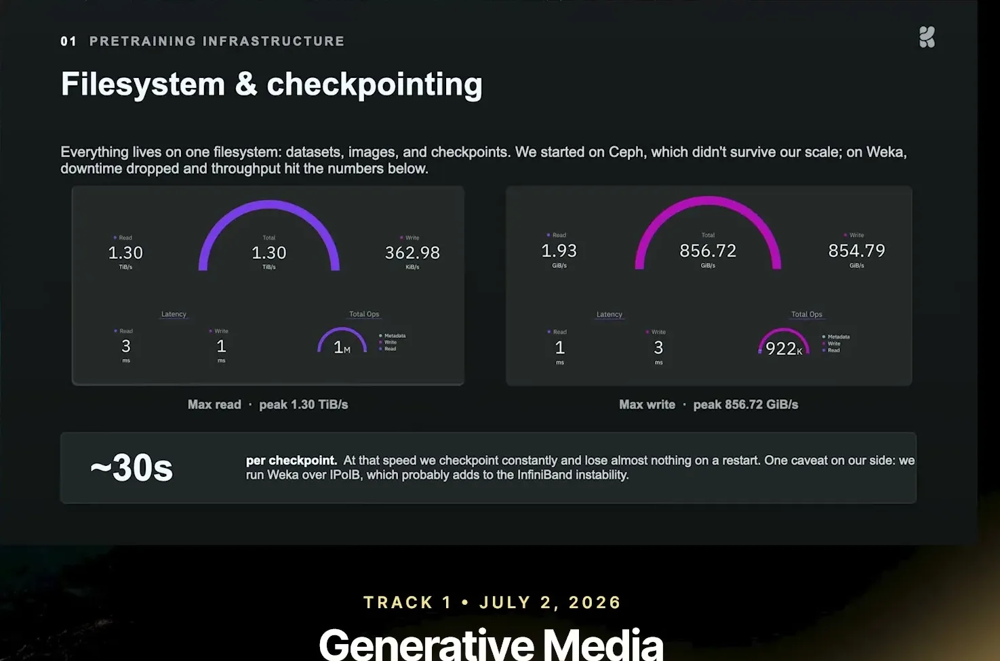
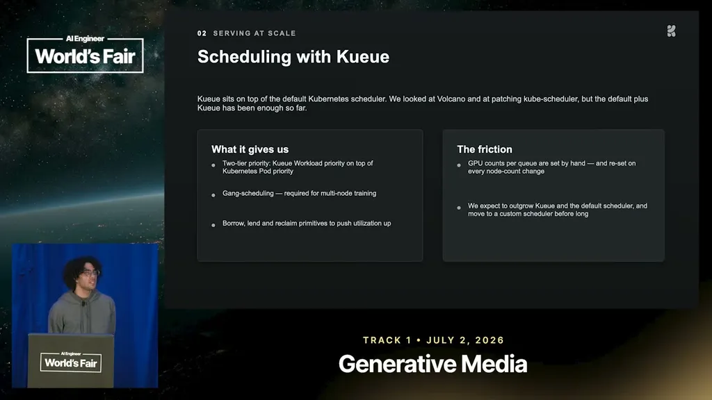
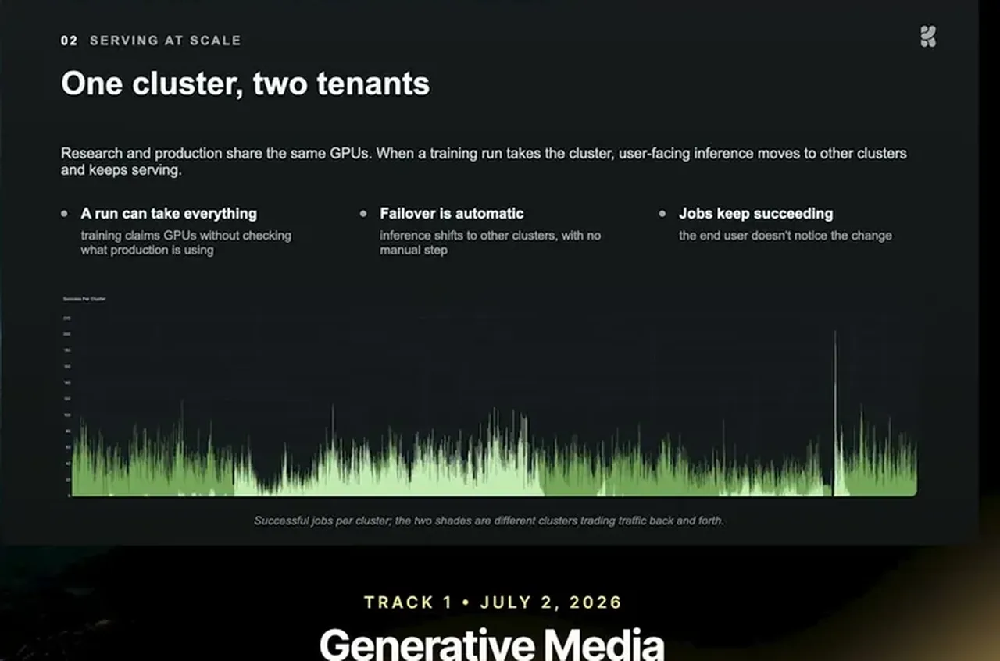
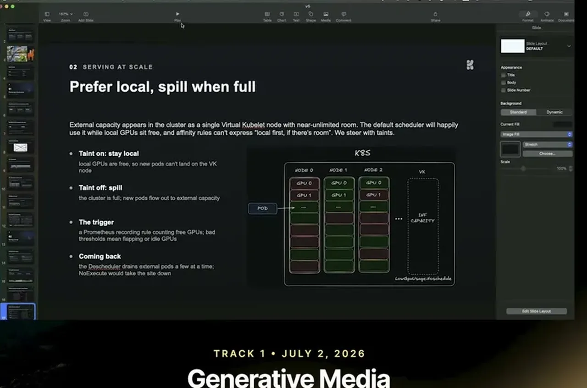

Infra behind Krea 2: How to train and serve at scale
Krea walks through its GPU training-and-serving cluster: tensor core metrics, aggressive checkpointing, InfiniBand/NVLink monitoring, and a Kubernetes virtual-kubelet-plus-descheduler system that reallocates GPUs live between training and inference.
If you only read one thing
- GPU utilization is described as a misleading metric ('a lie'); tensor core utilization was Krea's real proxy for whether GPUs were doing useful work. (c2, c3)
- Training runs crashed constantly and often silently, so Krea's fix was aggressive checkpointing (every 20-30 min) on paid, trusted storage rather than trying to eliminate crashes. (c5, c6, c7)
- Krea built a Kubernetes system (virtual kubelet + taints + descheduler) that automatically reallocates GPUs between production inference and training so researchers never have to think about GPU availability. (c8, c9)
The talk describes one cluster where training crashes drive checkpoint cadence, and a priority queue plus a virtual-kubelet/taint/descheduler system reclaims GPUs from production inference and hands them back gradually (ours); the diagram compresses several talk segments into one operating loop (ours).
Why this talk is a blueprint, not a take (ours)
Scope: The GPU infrastructure Krea built to pre-train an image foundation model from scratch and to serve production inference on the same physical cluster.
A monitoring stack that replaces the misleading GPU-utilization metric with tensor-core utilization and custom InfiniBand/NVLink collectors, paired with aggressive checkpointing on fast paid storage to survive frequent, often silent crashes. On top of that, a Kubernetes scheduling system (priority-tiered queue, virtual kubelet, taints, descheduler) automatically reallocates GPUs between training and production inference so researchers do not have to think about GPU availability.
Prerequisites the talk implies:
- A Kubernetes cluster with InfiniBand-connected GPUs and willingness to build custom metrics exporters (DCGM does not export InfiniBand data by default)
- Budget for paid, high-throughput storage rather than relying on a free filesystem like CephFS for checkpoint data
- An open-source gang-scheduling queue (Kueue in this case) sitting on top of the default Kubernetes scheduler
- Engineering time to build a virtual-kubelet provider and tune the taint/descheduler thresholds that govern when GPUs get reclaimed from production
What the talk does not say:
- No team size or build-time figures for the infra work described
- No cost figures for the paid storage or the external GPU capacity the virtual kubelet spills to
- No detail on how the Prometheus thresholds that trigger tainting were chosen or tuned
- The speaker calls the high crash rate possibly a 'skill issue, maybe our cluster,' so the specific failure numbers are not claimed to generalize to other clusters
If you were to replicate one thing first: Before touching scheduling, replace GPU utilization with tensor-core utilization as your primary training-health metric and confirm whether your metrics stack is missing InfiniBand data, since that gap is described as the single biggest source of unexplained crashes.
| Component | What it does (from the talk) | Evidence | Slide |
|---|---|---|---|
| Pretraining cluster | Trains K2 from scratch, no base checkpoint, on a Kubernetes cluster of hundreds to thousands of InfiniBand-connected GPUs, with a deliberately simple architecture. | c1 · 00:30 |  |
| GPU utilization metric | Reads pinned near 100% whether or not real work is happening, so the team stopped trusting it as a signal of effective training. | c2 · 05:09 |  |
| Tensor core utilization | Tracks the actual matmuls being run and was used as the real proxy for whether GPUs were doing useful work, rising visibly as image resolution scaled through training stages. | c3 · 05:39 | |
| InfiniBand/NVLink collectors | Custom-built metrics collection (not exported by default DCGM) for cross-node InfiniBand traffic and NVLink errors, used to catch the cross-node communication failures behind most crashes. | c4 · 06:11 |  |
| Paid fast filesystem (Weka) | Replaced an unreliable CephFS with paid storage delivering roughly 1.8 terabytes per second of reads and almost a terabyte per second of writes, so checkpointing does not delay training. | c6 · 08:17 |  |
| Priority-tiered job queue | An open-source queue with gang scheduling and two priority tiers so an urgent training job can skip ahead of other queued jobs. | c8 · 09:19 |  |
| Training-preempts-inference scheduling | Training pods run at consistently high priority; when training needs GPUs currently running inference, the inference workload is evicted automatically. | c9 · 09:19 |  |
| Virtual Kubelet + taint/descheduler | A virtual kubelet registers a fake node so evicted inference pods can spill to external capacity, taints stop new pods landing back on freed local GPUs, and a descheduler migrates inference back gradually so production does not go down. | c9 · 09:19 |  |
K2 was trained from scratch, no base checkpoint
- Krea 2 is a from-scratch pre-trained model, not a fine-tune of an existing checkpoint.
- The team describes bridging LLM-research techniques into diffusion transformers and keeping the model architecture deliberately simple.
- Small-scale ablations on limited GPU counts were used to validate hypotheses before scaling up.
“The model was trained from scratch. No base checkpoint, not anything”
said at 00:30GPU utilization lies; tensor core utilization doesn't
- As the cluster scaled from tens to hundreds of GPUs, crashes increased and were often silent, good-looking metrics with the job dead underneath.
- The standard GPU utilization metric read 100% during training but Menezes calls this misleading; it only shows the GPU is doing something, not whether that work is efficient.
- Tensor core utilization was used as the real proxy, and it visibly rose as image resolution scaled up through pre-training, mid-training, and post-training stages.
“GPU utilization which is a lie. Uh, don't trust this”
said at 05:09“this is 100% a lie. What we would use uh, as a proxy was tensor core utilization”
said at 05:39InfiniBand and NVLink metrics aren't exported by default
- Most cross-node training failures traced back to cross-node communication, but NVIDIA's default metrics (DCGM) don't export InfiniBand data and only partially export NVLink data.
- Krea built custom collection for both and calls this the most important infra investment for catching silent hardware failures.
“So if you don't have InfiniBand metrics, uh go go go get it”
said at 06:11Checkpoint constantly and don't trust cheap storage
- Given frequent crashes (runs often lasting well under 8 hours, and shorter than Meta's published failure-rate estimates for comparable scale), the practical fix was to checkpoint aggressively rather than chase root causes.
- Krea's initial filesystem (Ceph) was unreliable enough that they moved to paid storage (Weka, per the slides) delivering 1.8 terabytes/second reads and near a terabyte/second writes, letting them checkpoint every 20-30 minutes and write a terabyte of data in under 30 seconds without delaying training.
“Use and abuse the file system that you have”
said at 07:46“We can do like 1.8 terabytes of second of reads, almost a terabyte of writes”
said at 08:17“So, we could checkpoint every like 30 minutes, 20 minutes, produce like a terabyte of data in like less than 30 seconds”
said at 08:17“our runs would last way way less than this”
said at 03:37One cluster, dynamic GPU reallocation between training and production
- Krea runs training and production inference on the same cluster using Kueue, an open-source queue system with gang scheduling and workload-priority tiers, so urgent training jobs skip ahead in line and production inference gets preempted when training needs GPUs.
- The Kubernetes-based system (built on virtual kubelet, taints, and a descheduler) automatically detects GPU availability, evicts or migrates inference pods, and migrates them back gradually (not all at once) so production doesn't go down.
“this you can say like oh this training is more important than this one”
said at 09:19“If there's inference running on those machines, the inference gets kicked out”
said at 09:19Commentary (ours)
The specific numbers here (1.8TB/s reads, 20-30 min checkpoint cadence, sub-8-hour crash intervals) are useful less as universal benchmarks and more as evidence for how aggressive checkpointing needs to be at this scale (ours). The talk is candid that this is closer to 'skill issue, maybe our cluster' than a general law, so the specific failure rate shouldn't be taken as representative of all large clusters.
Underlying detail — every claim, typed and timestamped (10)
| Stance | Claim | t |
|---|---|---|
| asserts | Krea 2 was pre-trained from scratch with no base checkpoint, built entirely in-house. | 00:30 |
| warns | Standard GPU utilization metrics are described as a lie: they show the GPU is doing something, not whether the work is efficient. | 05:09 |
| recommends | Tensor core utilization, not raw GPU utilization, was the metric Krea actually used to judge whether GPUs were doing effective work, and it rose visibly as image resolution scaled through training stages. | 05:39 |
| recommends | NVIDIA's default DCGM metrics don't export InfiniBand data (and only partially export NVLink), so Krea built custom collection; most training failures traced to cross-node communication. | 06:11 |
| recommends | Given frequent, sometimes silent crashes, Krea's practical fix was to lean on the filesystem and checkpoint constantly rather than try to eliminate every failure. | 07:46 |
| asserts | Krea's paid worker-cluster storage delivers roughly 1.8 terabytes per second of reads and almost a terabyte per second of writes. | 08:17 |
| asserts | With that storage throughput, Krea could checkpoint every 20-30 minutes and write a terabyte of checkpoint data in under 30 seconds without delaying training. | 08:17 |
| recommends | The queue system supports two priority tiers so an urgent training job can be marked more important and skip ahead of other queued jobs. | 09:19 |
| asserts | Training pods run at consistently high priority; when a training job needs GPUs currently running inference, the inference workload is evicted. | 09:19 |
| asserts | Krea's training runs crashed more frequently than the failure-rate pattern described in a comparable Meta paper on large-scale training. | 03:37 |
Machine-readable copy embedded in this page (script#ontology) and in the corpus ontology.